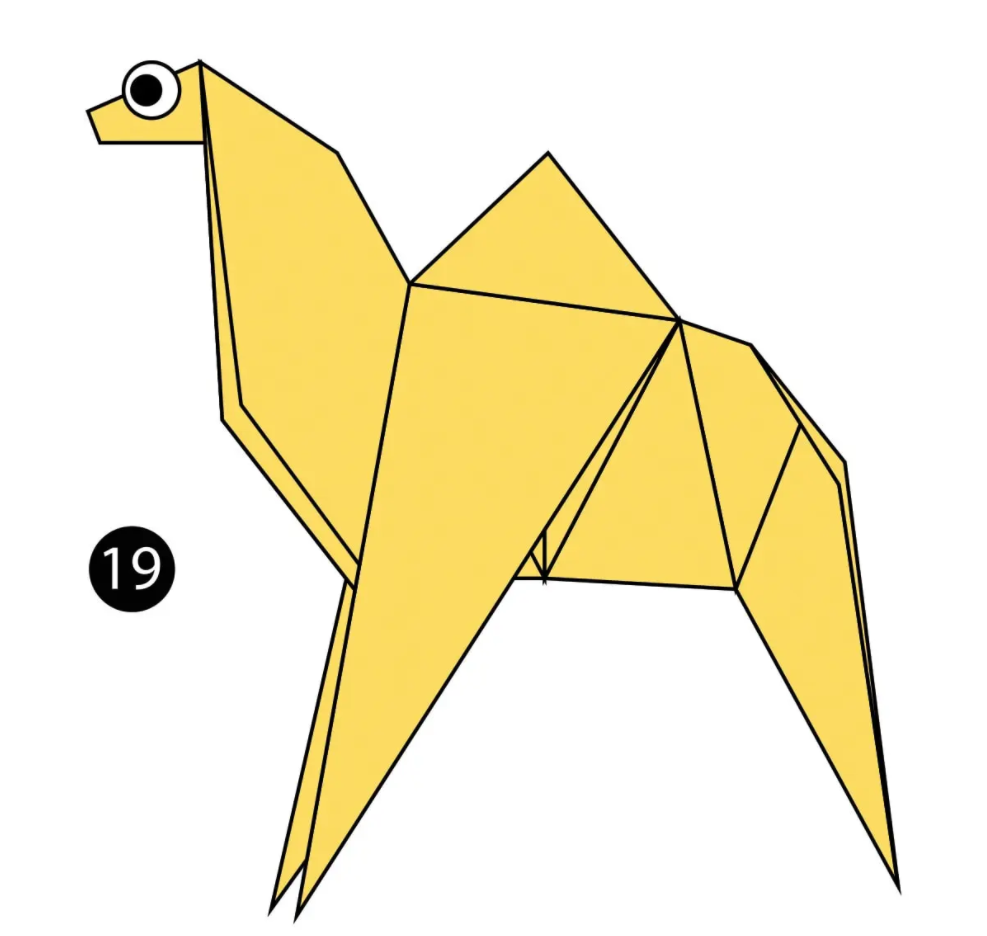
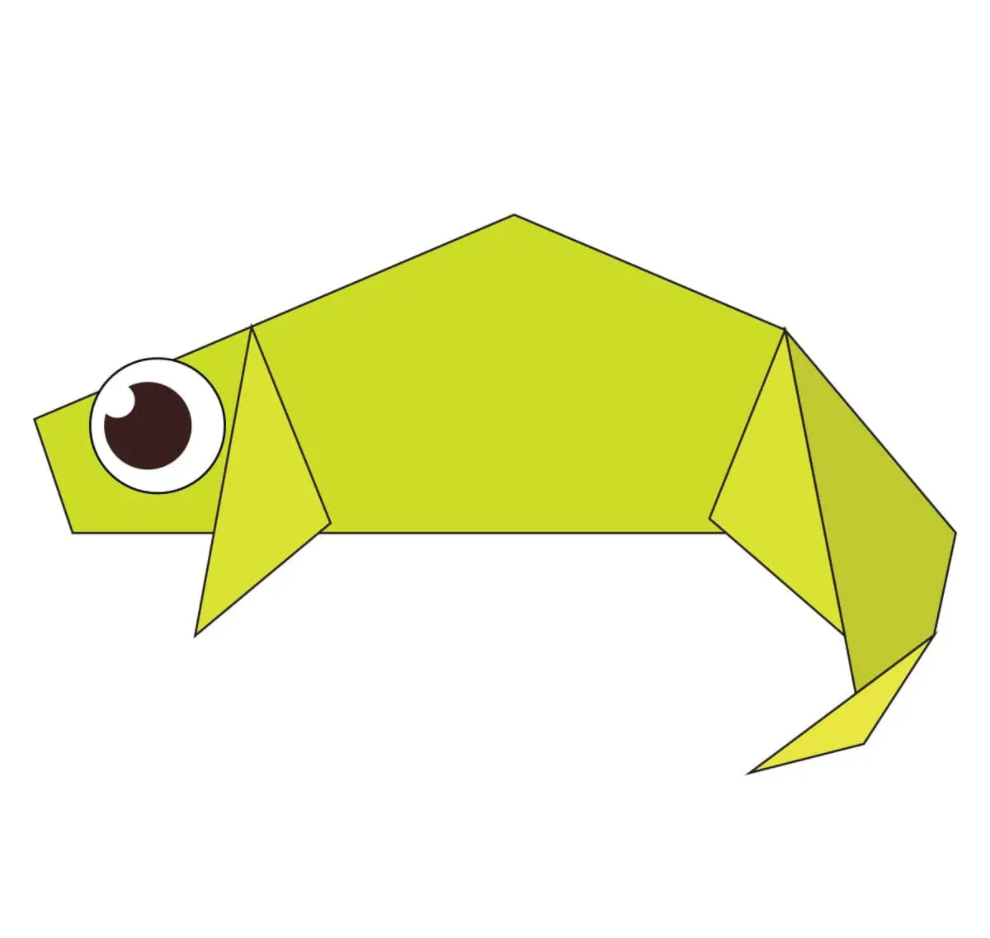
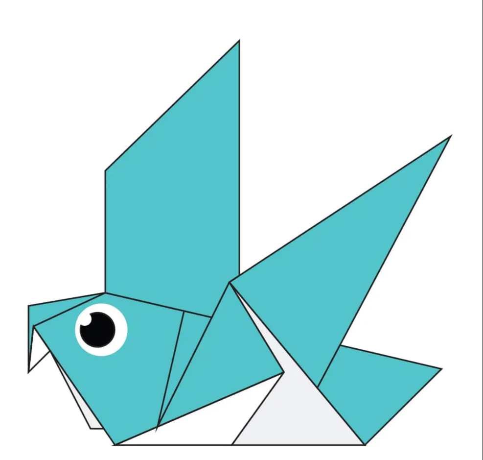

Interesting facts about Camel
- Camel's ears are furry
- Camel can move easily across the sand because of its specially designed feet
- When they find water, they will drink as much as possible

Interesting facts about Chameleon
- Chameleons are reptiles that are part of iguana suborder
- Changing skin color is an impostant part of communications among chameleons
- Most chameleons have a prehensile tail that they use to wrap around trees

Interesting facts about Pigeon
- Pigeons are incredibaly complex and inteligent animals
- Pigeons are reowned because of their outstanding navugational abilities
- Pigeons have excellent hearing abilities